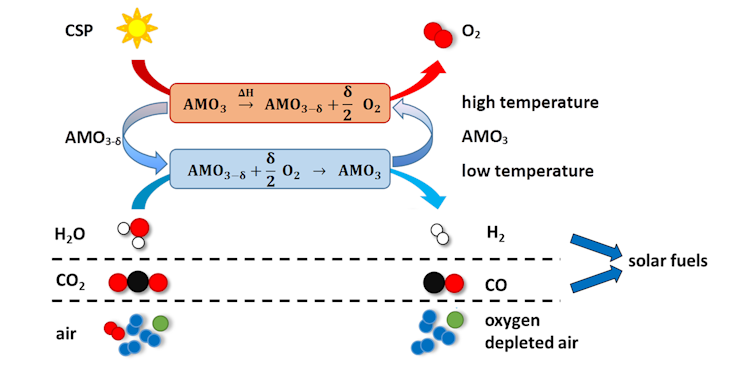
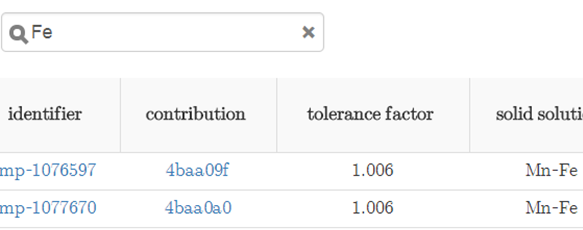
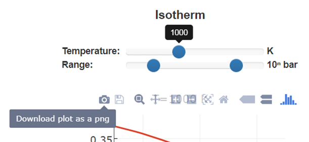

RedoxThermoCSP¶
Documentation for the RedoxThermoCSP landing
page.
Introduction¶
RedoxThermoCSP is a set of tools to calculate thermodynamic properties of perovskites AMO3-δ. Depending on the temperature and oxygen partial pressure, many of these perovskites show an oxygen non-stoichiometry expressed by δ. Moreover, the composition of these perovskites can be tuned over a large range of different elements, allowing to tune their thermodynamic properties. For these reasons, those materials are ideally suitable as redox materials in two-step thermochemical redox cycles (see Fig. 1). In a first step, the materials are reduced at high temperature and/or low oxygen partial pressure under the release of oxygen. The heat for the reduction can be supplied through concentrated solar power (CSP). In a second step, the materials are re-oxidized in air, or, if thermodynamically possible, in steam, or CO2. By this means, these perovskites may be used for two-step thermochemical oxygen storage, pumping, or air separation. Moreover, some of them can be used for water splitting or CO2 splitting, allowing the generation of solar fuels. Our approach is based upon creating solid solutions of perovskites to tune their thermodynamic properties. These solid solutions, denoted by
(A'xA''1-x)(6-n)+(M'yM''1-y)(n-2δ)+O3-δ
with n = 3, 4, 5 are defined by varying the content of the transition metals M while maintaining a fixed Goldschmidt tolerance factor by varying the content of A site metals.
The theoretical data is based on DFT calculations performed within the infrastructure of The Materials Project based on VASP. Part of our data is gathered using pymatgen and FireWorks. Reaction enthalpies were calculated using pymatgen's reaction calculator. If you use our tool, please cite the respective publications1. Although carefully researched, we assume no liability for the accuracy of the data.

Fig. 1: Two-step thermochemical cycles based on perovskites AMO3-δ with a reduction step at high temperature and/or low oxygen partial pressure, followed by re-oxidation at lower temperature and/or lower partial pressure2.
Generating thermodynamic data¶
Experimental data¶
The experimental thermodynamic data has been acquired in thermogravimetric experiments using the van't Hoff approach. Powdered samples (100-300 mg) are subjected to different atmospheres at different temperature levels (≈400-1300 °C) in a thermobalance. Oxygen partial pressures pO2 between ≈10-4 bar and 0.9 bar are set using a mixture of O2, Ar, and synthetic air in different flow rates. From equilibrium data of the mass change Δm induced by oxygen release or uptake, we retreived the change in redox enthalpy as a function of the oxygen non-stoichiometry ΔH(δ) and the respective change in entropy ΔS(δ). This data is available by opening the materials details pages by clicking on a contribution identifier in the table of materials data. The experimental thermodynamic data is fit using an empirical model. This allows interpolating between the measured data points and, to some extent, extrapolations. Our approach allows modelling the thermodynamics of perovskite solid solutions. Take a solid solution like Ca0.5Sr0.5Fe0.5Mn0.5O3-δ for example. According to DFT data, the redox enthalpy ΔH of SrMnO3-δ or CaMnO3-δ is signifiantly larger than the redox enthalpies of SrFeO3-δ or CaFeO3-δ. As the Fe4+ ions in this perovskites are typically reduced more readily than the Mn4+ ions, the redox enthalpy for low values of δ is typically lower than for high values of δ3. In our model, this behavior is represented by determining a lower limit of ΔH (dHmin) for δ → 0 and a higher limit of ΔH (dHmax) for δ → 0.5, with an arctangent function describing the gradual increase of ΔH as a function of δ between these limits.
The change in entropy ΔS for a perovskite can be modeled assuming dilute species4. We use this model by assuming two independent sub-lattices in a solid solution containing the two different redox-active species, of which the one with the less redox-active species only contributes significantly for high values of δ.
The mass change Δm of perovskites was measured vs. a reference point at pO2=0.18 bar and T=400 °C. Therefore, the change in non-stoichiometry is only measured relative to this reference point as a value of Δδ. To obtain the absolute δ values, we determined the δ at the reference point, denoted by δ0 (δ = Δδ + δ0). This has been done by using the dilute species model and substituing δ for Δδ + δ0, which allows obtaining δ0 as one of the fit parameters. This method can be inaccurate, therefore, some experimental datasets are shifted in direction of δ, such as the dataset for Ca0.15Sr0.85Mn0.2Fe0.8O3-δ. All thermodynamic properties are given per mol of O.
Our set of experimental thermodynamic data consists of 24 materials, which are solid solutions of perovskites with fixed tolerance factor w.r.t. the fully oxidized state. Some datasets contain only small ranges of δ, which is due to the constraints in redox conditions we can achieve in the thermobalance. For instance, Co-substituted SrFeO3-δ perovskites could only be measured at very high δ values, as they cannot be oxidized further under ambient oxygen pressure and decompose as soon as δ > ≈0.5 at temperatures above 600-700 °C.
Details on our empirical model, the redox behavior of perovskite solid solutions, and our measurement approach can be found in 1 and 3.
Theoretical data¶
The crystal structures of SrFeO3 (perovskite, cubic unit cell, space group 221)
and Sr2Fe2O5 (brownmillerite, orthorhombic, space group
46) are used as prototypes for the perovskite solid solutions. To allow solid solutions
with integer occupancies, 2x2x2 supercells are created from these prototypes and
occupancies are rounded to fractions of ⅛, leading to a maximum of 144 atoms per unit
cell for the brownmillerites. The most stable distribution of species in the solid
solution is found by minimizing the Ewald sum. GGA and GGA+U calculations are
combined according to Jain et.
al. The redox enthalpy for a complete reduction from perovskite (δ=0) to
brownmillerite (δ=0.5) under the release of oxygen is calculated using the reaction
calculator in pymatgen and normalized per mol of O.
Based on these values, the gradual
increase of redox enthalpies with increasing δ in solid solutions is modelled by
assuming two independent sub-lattices, accounting for the two species with different
reducibility. The redox enthalpies of the solid solution endmembers serve as boundaries
for the minimum and maximum redox enthalpies, and ΔH(δ,T) is determined by first
calculating the equilibrium pO2(δ,T) based on the non-stoichiometries of the
individual sub-lattices, which is then used to calculate ΔH(δ,T) as a numerical derivative
of the oxygen partial pressure vs. the temperature.
The entropy of the solid solutions is calculated as the sum of three
constituents:
S0, O2(T) refers to the partial molar entropy of oxygen, which can be determined by using the NIST-JANAF thermochemical tables and the Shomate equation. Δsconf(δ,T) describes the configurational entropy, which can be calculated using the dilute species model for both sub-lattices, and Δsvib(T) is the vibrational entropy, which can be determined using the Debye model from the Debye temperatures. The Debye temperatures are calculated from the elastic tensors, which are determined using DFT data. Elastic tensors are not available for some materials, in which case the data for SrFeO3-δ is used instead as an approximation. As the vibrational entropy is usually the smallest of the three contributions to the total entropy change, the error introduced by doing so is small. The set of elastic tensors in The Materials Project is continuously extended, which will eventually allow to get more accurate data for more and more materials.
Our set of theoretical thermodynamic data consists of > 240 perovskite/brownmillerite redox pairs, many of them solid solutions with fixed tolerance factor. Pure ternary compounds, such as EuFeO3-δ or BaMnO3-δ are also included, irrespective of their predicted stability according to the tolerance factor. All materials used in our contribution are accessible through The Materials Project, where additional data can be found, such as the predicted thermodynamic stability which is related to the energy above hull. The dataset also includes perovskites which are likely to be highly unstable under the conditions conceivable in practical application, such as MgCoO3-δ, NaVO3-δ, or SrCuO3-δ.
Details on our theoretical approach to modelling the thermodynamic data of perovskite solid solutions are given in 1.
Using the Isographs tool¶
A list of available materials is available on the bottom of the page. This list can be filtered by entering elements or the composition in the search bar:

By clicking on one of the rows, the corresponding "Isographs" are displayed above. Theoretical data is shown in red, and experimental data (if available) is shown in blue. Interpolated experimental data is shown as solid line, whereas extrapolated experimental data is displayed as dashed line to indicate its potential inaccuracy. Please note: As described above, the experimental data can be shifted significantly in δ direction w.r.t. the theoretical data - this has typically no big impact on the relative changes in non-stoichiometry.
The Isographs tool includes the following 6 plots:
- Isotherm: Shows the non-stoichiometry δ as a function of the oxygen partial pressure pO2 (in bar) with fixed temperature T (in K)
- Isobar: Shows the non-stoichiometry δ as a function of the temperature T (in K) with fixed oxygen partial pressure pO2 (in bar)
- Isoredox: Shows the oxygen partial pressure pO2 (in bar) as a function of the temperature T (in K) with fixed non-stoichiometry δ
- Enthalpy (dH): Shows the redox enthalpy ΔH as a function of the non-stoichiometry δ. Please note: The experimental dataset only contains values of ΔH(δ) instead of ΔH(δ,T) due to the measurement method. The fixed temperature value T therefore only refers to the theoretical data.
- Entropy (dS): Shows the redox entropy ΔS as a function of the non-stoichiometry δ. Please note: The experimental dataset only contains values of ΔS(δ) instead of ΔS(δ,T) due to the measurement method. The fixed temperature value T therefore only refers to the theoretical data.
- Ellingham diagram: Shows ΔG0 as a function of the temperature T (in K) with fixed non-stoichiometry δ. The gray isobar line can be adjusted to account for different oxygen partial pressures according to ΔG(pO2) = ΔG0 - ½ * RT * ln(pO2). If ΔG0 is below the isobar line, the reduction occurs spontaneously.
The graphs are interactive. Upon change of the fixed temperature or pressure values on the sliders above the graphs, the plot will be updated automatically. Moreover, the data can be zoomed in by selecting an area in the graph with the mouse, and zoomed out by double clicking on the graph. All graphs are based on plotly. Plotly allows downloading the plots as .png files and editing graphs online:

Using the Energy Analysis tool¶
The Energy Analysis tool is a powerful means to find the ideal redox material for a specific application. It returns a ranked list of suitable materials visualized as an interactive bar graph. The energy input is given as heat input per complete redox cycle (reduction + oxidation step).
The energy input neccessary to operate a certain redox cycle consitutes of the following elements:
- Chemical Energy: The chemical energy is defined by the redox enthalpy and is calculated as the integral over ΔH(δ) from δox to δred. It is inversely proportional to the heat recovery efficiency ηhrec, solid, as a more efficient heat recovery system allows for a larger fraction of the redox material to be re-heated by the waste heat from the previous cycle.
- Sensible Energy: The chemical energy is defined by the heat capacity and is calculated using the Debye model based on the elastic tensors of the materials (see above). Due to the relatively small changes in oxygen content of many perovskites upon reduction, this typically constitutes the largest share of energy consumption per mol of product. Please note that the experimental dataset does not contain heat capacity data, so the sensible energy is always based on theoretical considerations. The heat recovery efficiency ηhrec, solid has an analogous effect on the amount of sensible energy required per redox cycle as for the chemical energy.
- Pumping Energy: This refers to the energy required to pump the oxygen released during reduction out of the reactor chamber. It is independent of the reduction temperature or any oxidation conditions. No heat recovery from pumping is assumed. It is possible to either define a fixed value of pumping energy in terms of kJ/kg of redox material, or use the mechanical envelope function defined by Brendelberger et. al. The latter refers to the minimum energy required to pump a certain amount of oxygen using mechanical pumps according to an analytical function, which is defined between 10-6 bar and 0.7 bar total pressure (=oxygen partial pressure in this case) with an operating temperature of the pump of 200 °C. The value defined by the mechanical envelope may be undercut at low oxygen partial pressures using thermochemical pumps as an alternative. Sweep gas operation cannot be modelled using our approach.
- Steam Generation: This value is only displayed if water splitting is selected as process type. It refers to the energy required to heat steam to the oxidation temperature of the redox material. The inlet temperature of the steam generator can be defined. If it is below 100 °C, the heat of evaporation (40.79 kJ/mol) and the energy required to heat liquid water to its boiling point are considered. The heat capacities for water and steam are calculated using data from the NIST-JANAF thermochemical tables. For water splitting, a lower ratio of H2 vs. H2O in the product stream increases the amount of energy required for steam generation significantly, as more water needs to be heated up to generate the same amount of hydrogen. It is also possible to define a heat recovery efficiency from steam, which may be different from the heat recovery efficiency from the solid.
Options:
- Data source: Select experimental or theoretical data. Please note that experimental data may be inaccurate outside the window of process conditions set by our measurement (400-1200 °C, 10-4-0.9 bar pO2 in most cases).
- Process type: Air Separation, Water Splitting, CO2 Splitting. Please note that if experimental data is selected, only Air Separation can be chosen. This is intended - we did not study materials experimentally which are capable of water or CO2 splitting.
- Display parameters: The materials can be ranked by different parameters, including energy per mol of material or per mol of product. The heat to fuel efficiency for water splitting is defined as the higher heating value of hydrogen divided by the total heat input + pumping energy. It does not account for any losses. Practical total efficiencies are therefore always lower than the displayed value.
- Amount of materials to display: The amount of materials displayed can be changed to get a better overview.
Using the results for materials selection¶
Although the RedoxThermoCSP tools yield a rich dataset with profound physical and chemical background, it is important to consider its limitations. Any theoretical dataset is only as good as the theory behind it, and fitted experimental data may be biased by the fitting method. In general, we want these tools to serve as a method of materials pre-selection. The theoretical data cannot replace experiments, but it will significantly reduce the amount of materials to investigate experimentally and increase the success rate of experiments.
Our materials screening method predicts some materials which are likely to be unstable. We excluded those materials in the Energy Analysis section, but this data is still available to plot Isographs, and more information can be found in the accompanying publications. We excluded 36 materials out of the >200 theoretical datasets for the following reasons:
- tolerance factor < 0.9: Experiments performed in our labs have shown that EuFeO3-δ is a stable perovskite, whereas EuCuO3-δ could not be synthesized due to its tolerance factor of about 0.88 (Cu3+ ions have a too large ionic radius).
- Covalent V-O bonds: Compounds such as NaVO3 are stable, but those are not perovskite-structured. Due to the high covalency of the V-O bond in those cases, they form salt like structures with vanadate anions. Therefore, we exclude all compounds with V5+ cations in the lattice.
- Low melting points (alkali molybdenates): Some compounds form perovskites and similar structures, but they have melting points of only a few hundred degrees centrigrade, making them not useful for most thermochemical applications. Moreover, it is not reasonable to calculate properties like the oxygen non-stoichiometry for these compounds, at least not the way we treat solids. One example is sodium molybenate, and therefore exclude all compounds containing Mo5+ cations5.
This list is by no means complete, most of the perovskite solid solutions we suggest have
never been systhesized. However, with some understanding of perovskite chemistry and using
literature on similar phases, it should be possible to get a good estimate on the
stability of a suggested phase.
Moreover, one can also search these phases in The
Materials Project and find the so-called energy above hull. This is the DFT-calculated
energy difference between this phase and the most stable phase(s) containing the same
elements. In principle, if this energy is above 0, it means that the phase is metastable
according to DFT and may eventually decompose. However, some of these phases have been
synthesiszed and are stable, so this value just gives a first indication.
Finally, kinetic limitations also play a role, which are completely neglected herein, as DFT calculations are performed for a temperature of 0 K. Especially at low temperatures (below 350-600 °C), the phase may never be oxidized to the level predicted by thermodynamic calculations. Therefore, one should be especially careful when looking for materials to be applied in this temperature range, especially if they have very low redox enthalpies (chemical energy per mol of redox material).
This checklist may be helpful to evaluate whether a material suggested in the Energy Analysis section is actually a good choice:
- Is the phase a stable perovskite (ionic structure)? What are its expected physical properties (compare literature on similar phases)?
- May the oxidation reaction be kinetically limited? Check if the oxidation temperature is high enough. Most perovskites require 350-600 °C to show appreciable oxidation rates.
- Is the energy above hull exceptionally large? Is the predicted redox enthalpy reasonable? Check the materials on The Materials Project in terms of the energy above hull (-> "Explore Materials" on The Materials Project) and in terms of the redox enthalpy (-> "Calculate Reaction")
That being said, we believe that RedoxThermoCSP will make it a lot easier to find perovskite materials for thermochemical applications. Enjoy using it and feel free to use the data for your research! Our journal publications (see below) must be attributed.
-
J. Vieten, B. Bulfin, P. Huck, M. Horton, D. Guban, L. Zhu, Youjun L., K. A. Persson, M. Roeb, C. Sattler (2019). "Materials design of perovskite solid solutions for thermochemical applications" Energy & Environmental Science (accepted article), 10.1039/C9EE00085B ↩↩↩
-
J. Vieten et al. (2019). "Redox behavior of solid solutions in the SrFe1-xCuxO3-δ system for application in thermochemical oxygen storage and air separation" Energy Technology 7(1): 131-139., 10.1002/ente.201800554 ↩
-
J. Vieten, B. Bulfin, M. Senholdt, M. Roeb, C. Sattler, M. Schmücker (2017). "Redox thermodynamics and phase composition in the system SrFeO3−δ — SrMnO3−δ." Solid State Ionics 308: 149-155., 10.1016/j.ssi.2017.06.014 ↩↩
-
B. Bulfin, L. Hoffmann, L. de Oliveira, N. Knoblauch, F. Call, M. Roeb, C. Sattler, M. Schmücker (2016). "Statistical thermodynamics of non-stoichiometric ceria and ceria zirconia solid solutions" Physical Chemistry Chemical Physics 18(33): 23147-23154., 10.1039/c6cp03158g ↩
-
K. Eda, K. Furusawa, F. Hatayama, S. Takagi, N. Sotani (1991). "Formation of Na0.9Mo6O17 in a Solid-Phase Process. Transformations of a Hydrated Soldium Molybdenum Bronze, Na0.23(H2O)0.78MoO3, with Heat Treatments in a Nitrogen Atmosphere" Bull. Chem. Soc. Jpn. 64(99): 161-164., DOI: 10.1246/bcsj.64.161 ↩